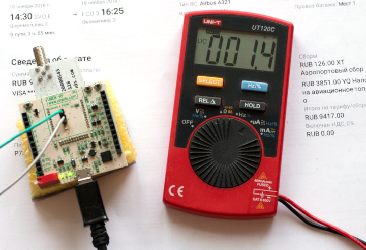
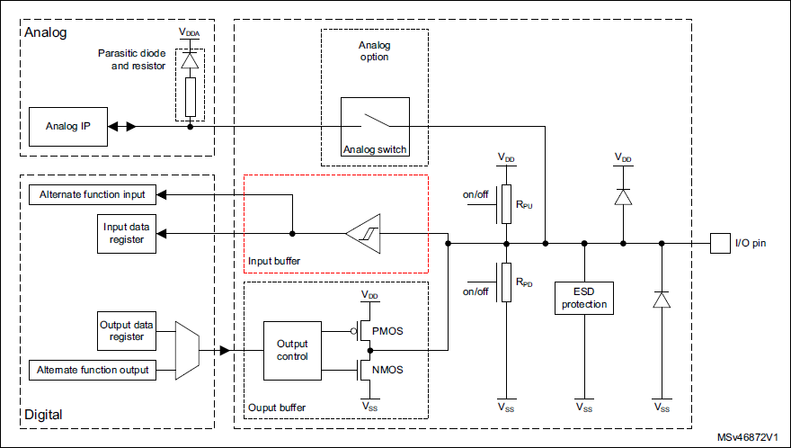
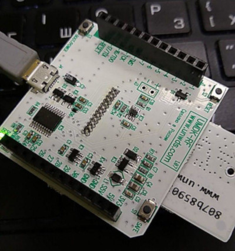
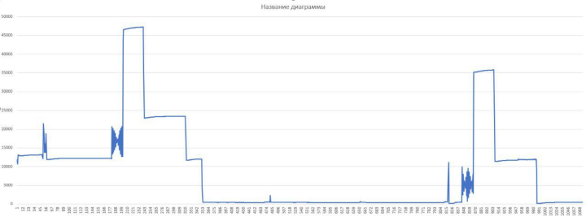
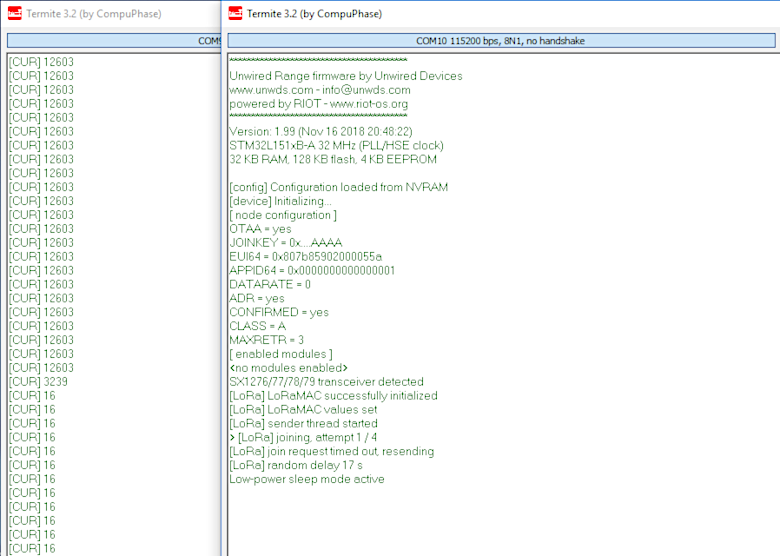

В сети довольно много статей про работу микроконтроллеров STM32 в энергоэффективных устройствах — как правило, это устройства на батарейном питании — однако среди них прискорбно мало разбирающих эту тему за пределами перечисления энергосберегающих режимов и команд SPL/HAL, их включающих (впрочем, та же претензия относится к подавляющему большинству статей про работу с STM32).
Тем временем, в связи с бурным развитием умных домов и всевозможного IoT тема становится всё более актуальной — в таких системах многие компоненты имеют батарейное питание, и при этом от них ожидаются годы непрерывной работы.
Восполнять данный пробел мы будем на примере STM32L1 — контроллера весьма популярного, достаточно экономичного и при этом имеющего некоторые специфические именно для этой серии проблемы. Практически всё сказанное будет также относиться к STM32L0 и STM32L4, ну и в части общих проблем и подходов — к другим контроллерам на ядрах Cortex-M.

Практический результат должен выглядеть примерно так, как на фотографии выше (и да, о применимости мультиметров и других средств измерения к подобным задачам тоже поговорим).
Режимы энергосбережения в STM32L1
Основа основ экономии батарейки — это основные режимы энергосбережения процессора. Они у каждого производителя и в каждой серии контроллеров свои (конкретный набор представляет собой вендорское расширение стандартных режимов ядра Cortex-M с различными нюансами относительно периферии, напряжений питания и т.п.).
Конкретно у STM32L1, который относится к экономичной серии контроллеров и в связи с этим, помимо прочего, получил расширенный набор настроек питания, мы имеем следующее:
Вход в каждый из режимов осуществляется достаточно просто — надо установить флаги в трёх-пяти регистрах, после чего (для режимов сна) позвать инструкцию WFI или WFE, это стандартная инструкция Cortex-M, означает «Wait For Interrupt» и «Wait For Event». В зависимости от флагов (они описаны в Reference Manual процессора, для STM32L1 это RM0038 - https://www.st.com/content/ccc/resource/technical/document/reference_manual/cc/f9/93/b2/f0/82/42/57/CD00240193.pdf/files/CD00240193.pdf/jcr:content/translations/en.CD00240193.pdf) процессор сам свалится на этой команде в нужный режим.
Кроме этого, неплохо бы запретить прерывания (на способности внешних и внутренних событий выводить процессор из сна это не скажется) и дождаться завершения сохранения данных из регистров в память, если вдруг таковое идёт, командой DSB.
Например, вот так выглядит уход в режим Stop:
/* флаг PDDS определяет выбор между Stop и Standby, его надо сбросить */
PWR->CR &= ~(PWR_CR_PDDS);
/* флаг Wakeup должн быть очищен, иначе есть шанс проснуться немедленно */
PWR->CR |= PWR_CR_CWUF;
/* стабилизатор питания в low-power режим, у нас в Stop потребления-то почти не будет */
PWR->CR |= PWR_CR_LPSDSR;
/* источник опорного напряжения Vref выключить автоматически */
PWR->CR |= PWR_CR_ULP;
/* с точки зрения ядра Cortex-M, что Stop, что Standby - это режим Deep Sleep */
/* поэтому надо в ядре включить Deep Sleep */
SCB->SCR |= (SCB_SCR_SLEEPDEEP_Msk);
/* выключили прерывания; пробуждению по ним это не помешает */
unsigned state = irq_disable();
/* завершили незавершённые операция сохранения данных */
__DSB();
/* заснули */
__WFI();
/* переинициализация рабочих частот */
init_clk();
/* после просыпания восстановили прерывания */
irq_restore(state);
WFI — блокирующая инструкция, на ней процессор уйдёт в глубокий сон и не выйдет из него, пока не случится какого-нибудь прерывания. Да, повторюсь, несмотря на то, что мы явным образом выключили прерывания, процессор на них отреагирует и проснётся — но обрабатывать начнёт только после того, как мы включим их обратно. И в этом есть глубокий смысл.
В коде выше после WFI не просто так идёт некая переинициализация рабочих частот — дело в том, что из глубокого сна L1 всегда выходит на частоте 4,2 МГц и с внутренним генератором MSI в качестве источника этой частоты. Во многих ситуациях вы очевидным образом не хотите, чтобы обработчик прерывания, разбудившего процессор, начал выполняться на этой частоте — например, потому, что у вас слетят частоты всех таймеров, UART и прочих шин; поэтому мы сначала восстанавливаем рабочие частоты (или, если хотим остаться на MSI, пересчитываем нужные шины под 4,2 МГц), а потом уже ныряем в прерывания.
На практике наиболее часто используются два режима — Run и Stop. Дело в том, что LP Run мучительно медленный и не имеет смысла, если процессору нужно выполнять какие-то вычисления, а не просто ждать внешних событий, а Sleep и LP Sleep не слишком экономичны (потребление до 2 мА) и нужны, если вам нужно сэкономить хоть сколько-нибудь, но при этом оставить работающую периферию и/или обеспечить максимально быструю реакцию процессора на события. Такие требования бывают, но в целом не очень часто.
Режим Standby обычно не используется, так как после него из-за обнуления ОЗУ невозможно продолжить с того же места, на каком вы остановились, а также есть некоторые проблемы с внешними устройствами, о которых мы поговорим ниже, и которые требуют аппаратных решений. Впрочем, если устройство разрабатывалось с расчётом на это, Standby можно использовать как режим «выключено», например, при длительном хранении этого устройства.
Собственно, на изложении этого большинство руководств обычно торжественно обрывается.
Проблема в том, что, следуя им, вы получите печальные 100-200 мкА реального потребления вместо обещанных даташитом 1,4 мкА в Stop при работающих часах — даже на эталонной отладке Nucleo, не имеющей вообще никаких внешних чипов, датчиков и т.п., на которые это можно было бы списать.
И нет, ваш процессор исправен, в errata ничего нет, а вы всё сделали правильно.
Просто не до конца.
Синдром беспокойных ног
Первая проблема STM32L1, про которую некоторые статьи упоминают, но чаще вспоминают только на форумах, когда на третий день обсуждения, откуда взялись те самые 100-200 мкА, кто-то вспоминает про существование AN3430 (https://www.st.com/content/ccc/resource/technical/document/application_note/77/74/4f/da/9b/9c/43/e7/DM00033348.pdf/files/DM00033348.pdf/jcr:content/translations/en.DM00033348.pdf) и доходит в нём до 19-й страницы — это состояние ножек по умолчанию.
Замечу, что даже сама STMicro к вопросу относится спустя рукава, и в большинстве документов, где оптимизация энергопотребления рассматривается, ограничивается одной-двумя фразами с советом притянуть неиспользуемые ножки к земле или перевести в режим аналогового входа, без объяснения причин.
Печаль заключается в том, что по умолчанию все ножки сконфигурированы как цифровые входы (0x00 в регистре GPIOx_MODER). На цифровом входе всегда стоит триггер Шмитта, улучшающий помехозащищённость этого входа, при этом он совершенно самостоятелен — это простейший логический элемент, буфер с гистерезисом, который не требует внешнего тактирования.
В нашем случае это означает, что тактирование мы в режиме Stop выключили, а триггеры Шмитта продолжили работать как ни в чём не бывало — в зависимости от уровня входного сигнала они переключают свои выходы в 0 и 1.
При этом часть ножек процессора в типовой схеме у нас висит в воздухе — то есть, никакого внятного сигнала на них нет. Было бы неверно думать, что отсутствие внятного сигнала означает, что на этих ножках 0 — нет, на этих ножках из-за их высокого входного сопротивления какие-то случайные помехи неустановленной величины, от наводок и перетекания тока с соседних дорожек до Первого канала телевидения, если у ноги достаточно длинная дорожка, чтобы служить антенной (впрочем, аналоговое ТВ в России скоро выключат, что должно привести к некоторому снижению энергопотребления неправильно сконфигурированных микроконтроллеров).
В соответствии с этими флуктациями ножка некоторым случайным образом переключается между 0 и 1. КМОП-логика потребляет ток при переключении. То есть, висящая в воздухе ножка процессора, сконфигурированная в режиме цифрового входа, потребляет заметный ток сама по себе.
Выход из этого простой — при старте программы надо все ножки сконфигурировать в состояние аналогового входа; у STM32 оно формально есть для всех ножек без исключения, независимо от того, подключены они к АЦП или нет, и от цифрового входа отличается только отсутствием триггера Шмитта на входе.

Для этого достаточно записать во все регистры GPIOx_MODER значение 0xFF...FF, проще всего это сделать, как уже говорилось выше, прямо на старте, а потом по ходу пьесы уже переконфигурировать отдельные ноги так, как надо в данном устройстве.
Здесь возникает, правда, проблема второго порядка — хорошо, если у вас прошивка работает на одном конкретном контроллере, и поэтому вы всегда знаете, чему в GPIOx равно x. Хуже, если прошивка универсальна — у STM32 может быть до 8 портов, но может быть и меньше; при попытке записи в несуществующий в данной модели контроллера порт вы получите Hard Fault, т.е. аварийную остановку ядра.
Впрочем, даже этот случай можно обойти — Cortex-M позволяет проверять адреса на их валидность, причём в случае M3 и M4 проверка вообще достаточно тривиальна, а на M0 требует некоторой магии, но реализуема (подробности можно почитать тут, раздувать ими эту статью не будем).
http://olegart.ru/wordpress/2018/09/30/5050/
То есть, в общем случае, стартовали процессор, настроили частоты — и сразу же прошлись по всем наличествующим портам GPIO, записав им в MODER единички (код ниже написан под RIOT OS, но в целом понятен без комментариев и может быть в три минуты переложен на любую другую платформу).
#if defined(CPU_FAM_STM32L1)
/* switch all GPIOs to AIN mode to minimize power consumption */
GPIO_TypeDef *port;
/* enable GPIO clock */
uint32_t ahb_gpio_clocks = RCC->AHBENR & 0xFF;
periph_clk_en(AHB, 0xFF);
for (uint8_t i = 0; i < 8; i++) {
port = (GPIO_TypeDef *)(GPIOA_BASE + i*(GPIOB_BASE - GPIOA_BASE));
if (cpu_check_address((char *)port)) {
port->MODER = 0xffffffff;
} else {
break;
}
}
/* restore GPIO clock */
uint32_t tmpreg = RCC->AHBENR;
tmpreg &= ~((uint32_t)0xFF);
tmpreg |= ahb_gpio_clocks;
periph_clk_en(AHB, tmpreg);
#endif
Замечу, что это касается только серии L1, в L0 и L4 опыт был учтён, и они по умолчанию при старте конфигурируют все порты как аналоговые входы.
Аккуратно проделав все эти процедуры, вы заливаете прошивку в готовое устройство… и получаете 150 мкА в режиме Stop на процессоре и всех выключенных внешних чипах, при том, что самые пессимистичные ваши оценки, исходящие из даташитов на всё, что у вас вообще припаяно на плате, дают никак не выше 10 мкА.
Более того, дальше вы пробуете увести процессор в Standby вместо Stop, т.е. просто выключить его почти полностью — и вместо того, чтобы упасть, энергопотребление возрастает ещё втрое, вплотную приближаясь к половине миллиампера!
Не надо паниковать. Как вы уже догадались, вы всё сделали правильно. Но не до конца.
Синдром беспокойных ног — 2
Следующая проблема состоит из двух частей.
Первая — достаточно очевидная: если устройство ваше состоит не из одного микроконтроллера, то важно не забывать, что у внешних чипов тоже есть входные сигналы, на которых висят триггеры Шмитта, и которые, более того, могут пробуждать внутреннюю логику чипа. Например, чип, уводимый и выводимый из своего сна командой по UART, при любом шевелении на этой шине будет пытаться прочитать с неё данные.
Соответственно, если все эти ноги повесить в воздухе, ничего хорошего мы не получим.
При каких условиях они оказываются в воздухе?
Во-первых, при уходе контроллера в режим Standby все GPIO переводятся в состояние High-Z, с высоким сопротивлением — то есть, по сути, подключённые к ним внешние чипы оказываются в воздухе. Исправить это программно в STM32L1 нельзя (в других сериях и других контроллерах бывает по-разному), поэтому единственный выход — в системе, в которой предполагается использование Standby-режима, входы внешних чипов должны быть притянуты к земле или питанию внешними резисторами.
Конкретный уровень выбирается так, чтобы линия с точки зрения чипа была неактивна:
Во-вторых, на STM32 при использовании режима Stop (sic!) состояние GPIO, подключённых к внутренним аппаратным блокам интерфейсов, может быть… разным. То есть, тот же интерфейс SPI, будучи сконфигурированным, в Stop совершенно внезапно оказывается то ли цифровым входом, то ли вообще High-Z — с соответствующими последствиями для висящих на нём внешних чипов. При том, что документация заявляет сохранение состояния ног, априори полагаться на это можно, только если вы используете ноги в качестве обычных GPIO.
Понять и простить это нельзя, но запомнить и исправить можно: для интерфейсов, ведущих себя подобным образом, в функцию ухода сна надо добавить принудительное переключение их в обычные GPIO с уровнями, соответствующими неактивным уровням данного интерфейса. После выхода из сна интерфейсы можно восстановить.
Например, тот же SPI перед уходом в сон (для простоты я беру код из операционки RIOT OS, понятно, что то же самое легко реализовать на регистрах):
/* specifically set GPIOs used for external SPI devices */
/* MOSI = 0, SCK = 0, MISO = AIN for SPI Mode 0 & 1 (CPOL = 0) */
/* MOSI = 0, SCK = 1, MISO = AIN for SPI Mode 2 & 3 (CPOL = 1) */
for (i = 0; i < SPI_NUMOF; i++) {
/* check if SPI is in use */
if (is_periph_clk(spi_config[i].apbbus, spi_config[i].rccmask) == 1) {
/* SPI CLK polarity */
if (spi_config[i].dev->CR1 & (1<<1)) {
gpio_init(spi_config[i].sclk_pin, GPIO_IN_PU);
} else {
gpio_init(spi_config[i].sclk_pin, GPIO_IN_PD);
}
gpio_init(spi_config[i].mosi_pin, GPIO_IN_PD);
gpio_init(spi_config[i].miso_pin, GPIO_AIN);
}
}
Обратите внимание, что выходы здесь настраиваются не как GPIO_OUT с уровнем 0 или 1, а как входы с подтяжкой к 0 или 1 — это момент не принципиальный, но обеспечивает дополнительную безопасность, если вы ошибётесь и попробуете поиграть в тяни-толкая с каким-нибудь внешним чипом, тянущим эту ножку в другую сторону. С GPIO_OUT можно устроить короткое замыкание, с GPIO_IN с подтяжкой — никогда.
Кроме того, не затрагивается сигнал SPI CS — в данном случае он формируется программно, то есть обычным GPIO, и своё состояние во сне сохраняет уверенно.
Для восстановления состояния ножки при выходе из сна достаточно при входе записать значения регистров, которые будут изменены (MODER, PUPDR, OTYPER, OSPEEDR — смотрите по ситуации в конкретном случае), в переменные, а при выходе из сна из переменных раскатать их обратно в регистры.
И вот теперь… та-дааам! Заглавная картинка. Полтора микроампера.
Но праздновать рано. На этом мы закончили статическую оптимизацию энергопотребления, и впереди нас ждёт динамическая.
Ахиллес против черепахи
Что лучше — больше кушать и быстрее бегать или меньше кушать, но медленнее бегать? В случае с микроконтроллерами ответ на этот вопрос дважды нетривиален.
Во-первых, рабочие частоты можно менять в очень широких пределах — от 65 кГц (LP Run) до 32 МГц в обычном режиме. Как и у любой КМОП-микросхемы, у STM32 есть две слагающие в энергопотреблении — статическая и динамическая; от частоты зависит вторая, первая же постоянна. В результате энергопотребление будет снижаться не так быстро, как рабочая частота и производительность, и в зависимости от задачи оптимальная с точки зрения энергоэффективности частота может оказаться разной — там, где надо ждать какого-то события, но почему-то нельзя уйти в сон, будут эффективны низкие частоты, там, где надо только молотить числа — высокие. В типовых «средних по больнице» задачах обычно не имеет смысла спускаться ниже 2-4 МГц.
Во-вторых, и это менее тривиальный момент, скорость выхода из сна зависит от рабочей частоты и способа её получения.
Наихудший случай — это выход из сна на частоту 32 МГц от внешнего кварца (напомню, что просыпается STM32L1 на внутреннем генераторе на 4 МГц), потому что состоит он из трёх этапов:
Собственно выход процессора из сна здесь — наименьшая проблема, при частоте 4,2 МГц он занимает примерно 10 мкс. А вот стабилизация кварца может занимать до 1 мс (хотя обычно для высокоскоростных резонаторов всё же быстрее, порядка нескольких сотен микросекунд), выход на режим PLL — ещё 160 мкс.
Эти задержки могут быть несущественны с точки зрения энергопотребления для системы, которая просыпается редко (не более раза в секунду), но там, где период между просыпаниями составляет десятки миллисекунд и меньше, а сами просыпания коротки, накладные расходы начинают вносить уже вполне измеримую добавку даже с учётом, что в ходе пробуждения процессор потребляет сравнительно небольшой ток.
Что с этим можно сделать? В общем-то ответ очевиден: стараться избегать использования внешнего кварца. Например, программа, в которой есть редкие тяжёлые подзадачи, требующие точного тактирования (скажем, из тривиальных — обмен данными по UART), и частые простые подзадачи, может внутри себя при каждом пробуждении решать по тем или иным признакам, надо ли вообще сейчас уходить на внешний кварц, или же проще (и быстрее!) будет выполнить текущую задачу на генераторе MSI, на котором процессор и так уже проснулся, не тратя кучу времени на инициализацию частот.
При этом, однако, может потребоваться подстройка частот тактирования периферии, а также подстройка режимов доступа к флэш-памяти (число циклов задержки), напряжения питания ядра процессора (в STM32L1 оно выбирается из трёх возможных значений) и т.п. Впрочем, что касается режимов работы ядра и памяти — часто можно забить на их подстройку, выбрав рекомендуемые для максимальной используемой частоты, так как неоптимальная работа ядра на меньших частотах не даст существенного изменения практической производительности и энергопотребления из-за малого объёма задач, на этих частотах выполняемых.
Хотя все подобные меры относятся уже к тонкой подстройке режимов (и, например, большинство ОС и библиотек ничего даже близко похожего из коробки не умеют), в некоторых случаях они могут дать снижение среднего потребления масштаба единиц процентов, а иногда и больше. Представьте себе, например, водосчётчик, который каждые 50 мс опрашивает контакты геркона, при этом собственно сам опрос занимает несколько десятков микросекунд — хотите вы к этому времени добавить ~500 мкс на пробуждение контроллера?..
Невыносимо долгая секунда
Ещё одна проблема, которая не имеет прямого отношения к энергосбережению, но неизбежно в связи с ним встречается — как отсчитывать промежутки времени меньше 1 секунды?
Дело в том, что на STM32L1 есть всего один таймер, работающий в режиме Stop — это RTC, штатная единица времени у которого — 1 секунда. Вместе с тем, в программах постоянно встречаются интервалы времени в единицы, десятки и сотни миллисекунд, взять хотя бы тот же водосчётчик.
Как быть? Сбегать на процессоры, имеющие таймеры LPTIM, способные тактироваться от 32768 Гц? Хороший вариант, на самом деле, но не всегда необходимый. Можно и без него.
Не на всех STM32L1, но начиная с Cat. 2 (это процессоры STM32L151CB-A, STM32L151CC и новее) блок RTC дополнился новым регистром — SSR, SubSeconds Register. Точнее, не столько дополнился, сколько сделал его видимым пользователю, плюс добавились субсекундные будильники ALRMASSR и ALRMBSSR.
Этот регистр не содержит в себе каких-то понятных единиц времени, его на скорую руку сделали из технического внутреннего счётчика. В STM32L1 тикающий на 32768 Гц часовой генератор проходит через два счётчика-делителя, асинхронный и синхронный, которые суммарно в штатном режиме делят его на 32768, чтобы получить 1-секундный тик для часов. Так вот, SSR — это просто текущее значение второго счётчика.
Хотя SSR считает не в миллисекундах, а в своих единицах, размерность этих единиц можно менять, меняя соотношение делителей синхронного и асинхронного счётчика, при этом сохраняя их общий коэффициент равным 32768, чтобы получить на входе RTC стандартную 1 секунду. Зная эти коэффициенты, можно посчитать и цену одного деления SSR в миллисекундах, а отсюда уже перейти к программированию субсекундных будильников.
Надо заметить, что асинхронный предварительный счётчик — экономичнее, чем синхронный SSR, и потому ставить его в 1, а на SSR входную частоту уже делить на 32768, получив отсчёт всего 30 мкс, энергетически невыгодно. Для себя мы определили оптимальным значением для предварительного делителя 7, для синхронного — 4095 ((7+1)*(4095+1) = 32768). При дальнейшем уменьшении предварительного делителя энергопотребление RTC начинает измеримо расти — на доли микроампера, но так как мы сравниваем это с «эталонным» 1,4 мкА в режиме Stop, то даже доли имеют значение. По умолчанию у STM32L1 эти значения — 127 и 255, т.е. цена отсчёта около 4 мс, что немного грубовато.
Если вы хотите поковыряться в коде, то в своё время мы доработали штатный драйвер RTC (https://github.com/unwireddevices/RIOT/blob/loralan-public/cpu/stm32_common/periph/rtc.c) из RIOT OS до поддержки RTC_SSR и миллисекундных интервалов. Пользуемся с тех пор буквально на каждом шагу (и так как мы работаем в ОС, то поверх него висит ещё и сервис, позволяющий лёгким движением руки навешивать на один аппаратный таймер практически сколько угодно задач с произвольными периодами).
Этот же подход переносится на контроллеры STM32L0 и STM32L4, все модели которых имеют регистр RTC_SSR; это позволяет не возиться с таймерами LPTIM и унифицировать код для разных платформ.
Как понять, что мультиметр врёт
Разумеется, после всех оптимизаций встаёт законный вопрос: а чего, собственно, мы добились? Без знания ответа на него можно было бы и вовсе ограничиться одним WFE с правильно настроенными флагами, уйти в сон и получить свои 200-500 мкА.
Наиболее традиционный способ измерения тока — разумеется, мультиметр. Понять, что он врёт на нагрузке типа микроконтроллера с его динамическим потреблением, очень просто — если он включён, значит, врёт.
Это, впрочем, не означает, что мультиметр в данном вопросе бесполезен. Надо просто уметь его применять.
Во-первых, мультиметр — очень медленная штука, типовое время на один отсчёт в нём масштаба секунды, типовое время смены состояния микроконтроллера — масштаба микросекунд. В системе, которая меняет своё потребление в таком темпе, мультиметр покажет просто случайные величины.
Однако, одна из интересующих нас неслучайных величин — это потребление микроконтроллера в режиме сна; если оно заметно превышает величину, которую мы прикинули по даташитам, значит, что-то явно не так. Это потребление статичной системы, то есть, может быть измерено мультиметром.
Наиболее тривиальный способ, показанный на заглавной фотке — мультиметр в режиме микроамперметра, который сейчас есть в большинстве моделей среднего уровня, и имеет хорошую точность и отличное разрешение. UT120C имеет разрешение 0,1 мкА при паспортной точности ±1% ±3 разряда, чего нам хватит за глаза.
Проблема с этим режимом одна — у мультиметров в нём большое последовательное сопротивление, масштаба сотен ом, поэтому в нормальном режиме микроконтроллер с таким мультиметром в цепи питания просто не запустится. К счастью, положения «mA» и «uA» практически во всех приборах на шкале рядом, гнёзда для измерения на обоих диапазонах одни, так что можно спокойно запустить контроллер на пределе «mA», а когда он уйдёт в сон, перещёлкнуться на «uA» — это происходит достаточно быстро, чтобы контроллер не успел потерять питание и перезагрузиться.
Обратите внимание, что если у контроллера случаются всплески активности, этот способ неприменим. В прошивке устройства с фотографии, например, каждые 15 секунд сбрасывается сторожевой таймер — в эти моменты мультиметр успевает показать что-то в районе 27 мкА, что, конечно, не имеет отношения ни к чему, кроме погоды на Марсе. Если в вашей системе что-то сколь угодно короткое происходит чаще чем раз в 5-10 секунд, мультиметр будет попросту врать.
Другой способ измерения статического (я вот прямо выделяю это слово) потребления мультиметром — это измерение падения на внешнем шунте. Если требуется измерять сверхмалые токи масштаба единиц-десятков микроампер, то надо поставить большой (например, 1 кОм) шунт, а параллельно ему — диод Шоттки в прямом включении. При падении на шунте более 0,3 В диод будет открываться и ограничивать падение напряжения, а до 0,3 В можно спокойно измерять падение мультиметром на милливольтовом диапазоне, 1 мВ = 1 мкА.
Измерять типовым мультиметром падение на низкоомном шунте, увы, не получится — приборы среднего класса даже если показывают что-то ниже 100 мкВ, точность в этом диапазоне имеют прискорбную. Если же у вас есть хороший настольный прибор, способный показать 1 мкВ, мои советы вам уже не нужны.
Однако статика — это хорошо, а как быть с динамикой? Как оценить то же влияние разных частот на среднее энергопотребление?
Вот здесь всё сложно.
Давайте запишем базовые требования:
Если мы просто напрямую переложим это в цифры, то получим сравнительно быстрый и не менее чем 18-битный АЦП с входным смещением менее 30 мкВ, аналоговый фронтенд, способный измерять напряжения от 1 мкВ, и быстрый интерфейс к компьютеру, который позволит нам всё это передать и сохранить.
И всё это под одно-единственное применение.
Понимаете, да, почему такие вещи на каждом углу по десять баксов не лежат? Keysight N6705C в первом приближении отвечает нашим требованиям, вот только стоит он $7960.
Из более бюджетных решений, например, SiLabs встраивает измерение тока в свои отладки — характеристики их Advanced Energy Monitoring (AEM) System зависят от конкретной модели отладки, при этом наибольшая проблема у них со скоростью измерения. В старых «стартовых наборах» STK3300/3400 это всего 100 Гц, на более новых отладках STK3700/3800 (легко узнаваемых по чёрному текстолиту) — 6,25 кГц, а в старших моделях отладок серии DK может доходить до 10 кГц, но и стоят они уже $300+. Для серьёзных задач SiLabs официально рекомендует вышеупомянутый Keysight.
В принципе, подобное устройство можно сконструировать самому — нужны в первую очередь очень хорошие ОУ с минимальным смещением входа, вроде OPA2335. Таких ОУ ставится на один и тот же шунт 2-3 штуки с разными коэффициентам усиления, все они заводятся на разные входы АЦП (при таком подходе вполне можно использовать встроенный в микроконтроллер), далее при каждом съёме данных программно определяется, какой из ОУ в данный момент не перегружен, с него показания и засчитываются.
Проблема скорости передачи данных на компьютер решается достаточно просто — так как для практических целей нам интересно в первую очередь среднее потребление системы в реальной жизни, микросекундные отсчёты можно собирать в набортном микроконтроллере измерителя и выдавать наверх среднее арифметическое за какой-то разумный миллисекундного масштаба период.
Кроме того, как показывает практика, весьма полезно иметь измеритель-логгер пусть простой и не слишком точный, но всегда находящийся под рукой — чтобы не получить неожиданностей с поломанным каким-то изменением прошивки энергосбережением.
Мы, например, такой встроили на наш стандартный USB-адаптер UMDK-RF, который постоянно используется при отладке прошивок — в нём уже есть SWD-программатор с поддержкой протокола DAPLink, мостик USB-UART и логика управления питанием, соответственно, измеритель потребления достался ему практически бесплатным довеском. Сам по себе измеритель представляет собой шунт 1 Ом и усилитель INA213 (усиление в 50 раз, типовое смещение нуля 5 мкВ):

Усилитель подключён прямо на вход АЦП микроконтроллера (STM32F042F6P6), АЦП отрабатывает с периодом 10 мкс по аппаратному таймеру, а наверх по USB выдаются усреднённые данные за 100-мс интервал. В результате, поменяв что-то в логике прошивки, можно просто пойти покурить или выпить кофе, оставив устройство на столе, а вернувшись, посмотреть в график типа такого:

Точность такого «бесплатного» устройства, разумеется, невысокая — при 12-битном АЦП и одном усилителе минимальный квант составляет 16 мкА, но именно для быстрой и регулярно оценки поведения отлаживаемых устройств с точки зрения энергопотребления оно крайне полезно. В конце концов, если вы наворотите в прошивке или устройстве что-то не то, то с очень высокой гарантией вылезете из единиц микроампер как минимум в сотни, а это будет хорошо заметно.

Отдельный приятный бонус — так как данные выдаются в виртуальный COM-порт в текстовом виде (значения в микроамперах), можно расположить окно терминала рядом с окном, показывающим консоль устройства, и смотреть на энергопотреблением одновременно с отладочными сообщениями.
Хвастаюсь я этим не просто так, а чтобы предложить всем желающим использовать данный минимальный (и очень дешёвый!) программатор-отладчик в собственных проектах.
Срисовать схему
можно тут - https://github.com/unwireddevices/umdk-boards/blob/master/umdk-rf-107.pdf
(исходник в DipTrace - https://github.com/unwireddevices/umdk-boards/blob/master/umdk-rf-107.dch),
утянуть прошивку — здесь - https://github.com/unwireddevices/dap42
(бранч umdk-rf, при сборке цель UMDK-RF, основана на проекте dap42 - https://devanlai.github.io/projects/dap42/).
Схема нарисована хоть и сумбурно, но, надеюсь, основные моменты понятны, прошивка написана на C с использованием libopencm3 и собирается обычным arm-none-eabi-gcc. В качестве дополнительных функций у прошивки есть управление питанием, отлов сигналов о перегрузке с управляющих ключей и ввод подключённого к ней контроллера в его родной бутлоадер длинным нажатием кнопки.
NB: если вы хотите, чтобы кнопка boot заводила собственный контроллер программатора в его бутлоадер штатным образом, у неё должна быть изменена полярность подключения, в прошивке убрана правка option bytes контроллера при первой загрузке и программный вход в бутлоадер, а также изменена полярность прерывания для штатных функций этой кнопки.
Посмотреть на то, как делается измерение тока на паре ОУ с разными коэффициентами усиления (например, с целью усовершенствования вышеописанного отладчика под свои задачи),
можно тут (стр. 9) - https://www.silabs.com/documents/public/schematic-files/EFM32ZG_BRD2010A_schematic.pdf
более традиционный альтернативный вариант — с одним ОУ и недешёвым 24-битным АЦП — есть у TI (EnergyTrace на стр. 5) - https://yadi.sk/i/mIBTGDfM1H6vJQ
P.S. Обратите внимание, что при отладке с подключённым UART или JTAG/SWD через их ножки также может утекать небольшой ток, которого не будет при реальной эксплуатации устройства. Так, на UMDK-RF в SWD подтекает около 15 мкА (и поэтому на заглавной фотографии измерения мультиметром делаются на старой версии платы, без SWD), а на STM32 Nucleo бывали и случаи с паразитным расходом через SWD порядка 200 мкА. - http://olegart.ru/wordpress/2016/12/24/4965/
Используемые для измерения отладочные платы необходимо на такие особенности проверять — либо отключая их интерфейсные линии, если такая возможность есть, либо сравнивая результаты с потреблением устройства, измеренным без установки на отладку, например, мультиметром в статичном режиме.
Вместо заключения
Надеюсь, вы уже поняли, какую ошибку совершили, выбрав программирование микроконтроллеров в качестве своей основной специальности.